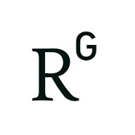

loinguyen[at]iopan.pl | loinguyen[at]sz.tsinghua.edu.cn
Tsinghua University, Shenzhen International Graduate School Ocean Building, University Town of Shenzhen, Nanshan District, Shenzhen 518055, P.R. China.